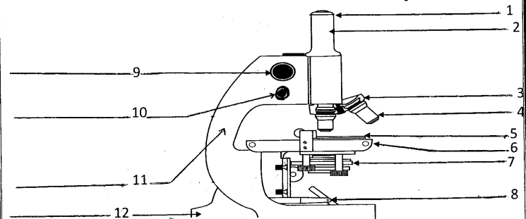
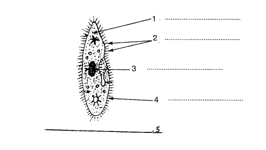
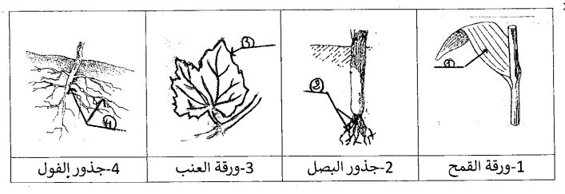
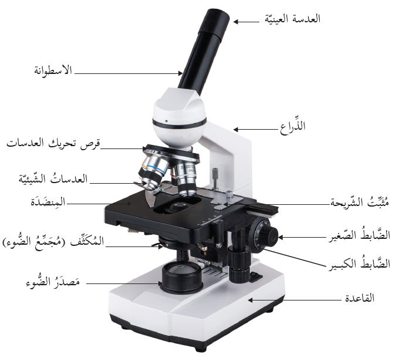
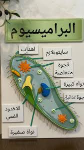

فرض تأليفي عدد 3 في علوم الحياة والأرض
المستوى : السنة السابعة أساسي
الأستاذة : وسيلة بالحاج
المؤسسة : المدرسة الإعدادية بزاوية الجديدي
السنة الدراسية : 2023 / 2024
تعليمات عامة
- أجب بدقة على الأسئلة المطروحة
- اعتن بجودة الخط وتنظيم الإجابة
- الرسوم والبيانات يجب أن تكون واضحة ومقروءة
- انتبه إلى توزيع النقاط بين مختلف الأسئلة
الجزء الأول (12 نقطة)
التمرين الأول (4 نقاط)
أكمل الجمل التالية بكتابة العبارات الواردة في المستطيل في المكان المناسب.
1- تعتبر الوحدة التركيبية و للكائنات الحيّة. 1.25 نقطة
2- تتنوع الخلايا في أشكالها و ووظائفها إلا أنها تتركب من 3 أجزاء أساسية وهي والسيتوبلازم و . 1.5 نقطة
3- تنقسم الكائنات الحيّة حسب عدد الخلايا المكوّنة لها إلى مجموعتين:
* الكائنات مثل البراميسيوم
* الكائنات مثل
1.25 نقطةالتمرين الثاني (4 نقاط)
يمثل الرسم الموالي مجهرًا ضوئيًا:

الوثيقة : رسم تخطيطي لمجهر ضوئي
1- أكتب البيانات المناسبة أمام الأرقام. 1.5 نقطة
البيانات:
2- حدّد وظيفة المجهر. 1 نقطة
3- وقعت مشاهدة كائن دقيق بمجهر تحمل عدسته العينية الإشارة (×15) وعدسته الشيئية الإشارة (20x). حدّد قوة تكبير المجهر (كتابة القاعدة ضرورية). 1.5 نقطة
القاعدة:
العملية الحسابية:
قوة التكبير =
التمرين الثالث (4 نقاط)
وضع أحمد أوراق المقدونس في حوض زجاجي به ماء لمدّة أسبوع، ولما أراد مشاهدة الكائنات الحيّة الموجودة بمنقوع المقدونس استعمل المجهر الضوئي.
1- فسّر كيف أعدّ أحمد المحضّر المجهري. 2 نقاط
2- رسم أحمد الكائن الذي شاهده بواسطة المجهر الضوئي ولكنه نسي كتابة البيانات. تعرّف إلى هذا الكائن وأكتب البيانات المناسبة أمام الأرقام. 2 نقاط

الوثيقة : رسم تخطيطي لكائن حي دقيق شاهده أحمد
اسم الكائن:
البيانات:
الجزء الثاني (8 نقاط)
التمرين الأول (4 نقاط)
1- صف ورقة نبات القمح وورقة نبات العنب وفق حافة النصل وتوضّع العروق داخله. نقطتان

الوثيقة : رسوم تخطيطية لأوراق وجذور بعض النباتات
| النبات | حافة النصل | توضّع العروق |
|---|---|---|
| ورقة القمح | ||
| ورقة العنب |
2- حدّد نوع الجذور عند نبات البصل وعند نبات الفول. نقطة واحدة
| النبات | نوع الجذور |
|---|---|
| جذور البصل | |
| جذور الفول |
3- صنّف هذه النباتات (القمح، البصل، العنب والفول) إلى نباتات أحادية الفلقة ونباتات ثنائية الفلقة معللا إجابتك. نقطة واحدة
| النبات | أحادية الفلقة أم ثنائية الفلقة | التعليل |
|---|---|---|
| القمح | ||
| البصل | ||
| العنب | ||
| الفول |
التمرين الثاني (4 نقاط)
للتعرف إلى بعض مظاهر تدهور التنوع البيولوجي وأسبابه نقدّم المعطيات التالية:
يوجد ببلادنا 151 نوعًا نباتيًا نادرًا وهي مهددة بالانقراض. يوجد أيضًا ببلادنا عديد الأنواع النباتية الأخرى ذات أهمية اقتصادية وطبية وغذائية نذكر منها الحلفاء والكبّار وشجر الفلين والزيتون والنخيل.
من بين الفقريات يوجد ببلادنا 80 نوعًا من الثدييات و362 نوعًا من الطيور وأكثر من 500 نوع من الزواحف والبرمائيات والأسماك.
من الأنواع المهددة بالانقراض هناك الضفدعيات وبعض الزواحف مثل السلحفاة وبعض الطيور مثل النحام الوردي وطائر الحباري والسمان... وبعض الثدييات مثل غزال الريم والأروية المغاربية.
من دليل: التنوع البيولوجي والأنواع النادرة بتونس من إنتاج وزارة البيئة والتهيئة الترابية.
1- إلى ماذا تعود حسب رأيك ندرة (قلّة) الأنواع الحيوانية والنباتية؟ 1.5 نقطة
2- أذكر بعض الممارسات الكفيلة لحماية هذه الأنواع من الانقراض. 1.5 نقطة
3- كيف يمكن للإنسان أن يستغل فوائد بعض الأنواع النباتية والحيوانية؟ نقطة واحدة
الإصلاح النموذجي المفصل
الجزء الأول - التمرين الأول (4 نقاط)
1- تعتبر الخلية الوحدة التركيبية والوظيفة للكائنات الحيّة. 1.25 ن
الشرح: الخلية هي أصغر وحدة بنائية (تركيبية) في الكائن الحي، وهي التي تؤدي جميع الوظائف الحيوية (التنفس، التغذية، التكاثر...).
2- تتنوع الخلايا في أشكالها وأحجامها ووظائفها إلا أنها تتركب من 3 أجزاء أساسية وهي الغشاء السيتوبلازمي والسيتوبلازم والنواة. 1.5 ن
الشرح: مهما اختلفت الخلايا شكلاً وحجماً ووظيفة، فهي تشترك في ثلاثة مكونات أساسية: الغشاء السيتوبلازمي (يحيط بالخلية)، السيتوبلازم (مادة هلامية تملأ الخلية)، والنواة (مركز التحكم).
3- تنقسم الكائنات الحيّة إلى:
* الكائنات أحادية الخلية مثل البراميسيوم
* الكائنات متعددة الخلايا مثل البصل
1.25 نالشرح: الكائنات أحادية الخلية تتكون من خلية واحدة (كالبراميسيوم والبكتيريا)، بينما الكائنات متعددة الخلايا تتكون من عدة خلايا (كالبصل والإنسان).
التمرين الثاني (4 نقاط)

المجهر الضوئي مع البيانات
1- البيانات: 1.5 ن
1: العدسة العينية – 2: العدسات الشيئية – 3: المنصة (أو المسرح) – 4: المكثف – 5: المرآة – 6: المسماران (الكبير والصغير للتبئير)
التنقيط: 0.25 نقطة لكل بيان صحيح. تُقبل الإجابات القريبة مثل "المسمار الكبير" أو "مسمار التبئير".
2- وظيفة المجهر: 1 ن
تكبير الأجسام الدقيقة والكائنات المجهرية التي لا تُرى بالعين المجردة لدراستها ومشاهدتها بوضوح.
3- حساب قوة التكبير: 1.5 ن
القاعدة: قوة التكبير = تكبير العدسة العينية × تكبير العدسة الشيئية
العملية الحسابية: قوة التكبير = 15 × 20
قوة التكبير = 300 مرة
التنقيط: 0.5 نقطة لكتابة القاعدة الصحيحة + 0.5 نقطة للعملية الحسابية + 0.5 نقطة للنتيجة الصحيحة مع الوحدة (مرة).
التمرين الثالث (4 نقاط)
1- طريقة تحضير المحضر المجهري: 2 ن
- أخذ قطرة ماء من منقوع المقدونس بواسطة قطّارة.
- وضع القطرة على صفيحة زجاجية نظيفة.
- تغطية القطرة بغطاء زجاجي رقيق (سلمة) بطريقة مائلة لتجنب الفقاعات الهوائية.
- إزالة الماء الزائد بورق ترشيح إذا لزم الأمر.
- وضع الصفيحة على منصة المجهر للمشاهدة.
التنقيط: نقطتان لمن يذكر الخطوات الأساسية: أخذ القطرة، وضعها على الصفيحة، تغطيتها بالغطاء الزجاجي، المشاهدة بالمجهر.

البراميسيوم مع البيانات
2- التعرف على الكائن وكتابة البيانات: 2 ن
اسم الكائن: البراميسيوم
البيانات: 1: الغشاء السيتوبلازمي – 2: السيتوبلازم – 3: النواة الكبيرة – 4: الأهداب (أو الأهداب الهزازة)
الشرح: البراميسيوم كائن حي دقيق أحادي الخلية يعيش في الماء العذب. يتميز بوجود أهداب تساعده على الحركة، ويحتوي على نواتين (كبيرة وصغيرة). يُشاهد غالباً في منقوع النباتات كالمقدونس.
الجزء الثاني - التمرين الأول (4 نقاط)
1- وصف ورقة القمح وورقة العنب: 2 ن
| النبات | حافة النصل | توضّع العروق |
|---|---|---|
| ورقة القمح | ملساء (كاملة) | عروق متوازية |
| ورقة العنب | مسننة | عروق متفرعة راحية (أو شبكية) |
الشرح: أوراق النباتات أحادية الفلقة (كالقمح) تتميز بحافة ملساء وعروق متوازية. أما أوراق النباتات ثنائية الفلقة (كالعنب) فحافتها غالباً مسننة وعروقها متفرعة شبكية.
2- نوع الجذور: 1 ن
| النبات | نوع الجذور |
|---|---|
| جذور البصل | جذور ليفية (حزمية) |
| جذور الفول | جذر وتدي (أصلي) |
الشرح: النباتات أحادية الفلقة (كالبصل) تمتاز بجذور ليفية تنمو في حزمة. أما ثنائية الفلقة (كالفول) فتمتاز بجذر وتدي رئيسي تتفرع منه جذور ثانوية.
3- تصنيف النباتات: 1 ن
| النبات | التصنيف | التعليل |
|---|---|---|
| القمح | أحادي الفلقة | عروق متوازية، جذور ليفية |
| البصل | أحادي الفلقة | عروق متوازية، جذور ليفية |
| العنب | ثنائي الفلقة | عروق متفرعة شبكية، أوراق مسننة |
| الفول | ثنائي الفلقة | جذر وتدي، عروق متفرعة |
معيار التصنيف: يعتمد على شكل العروق (متوازية = أحادية الفلقة / متفرعة شبكية = ثنائية الفلقة) ونوع الجذور (ليفية = أحادية / وتدية = ثنائية) وحافة النصل.
التمرين الثاني (4 نقاط)
1- أسباب ندرة الأنواع الحيوانية والنباتية: 1.5 ن
- تدمير المواطن الطبيعية (إزالة الغابات، الزحف العمراني، توسع الأراضي الزراعية).
- التلوث (تلوث المياه والهواء والتربة بالمبيدات والنفايات الصناعية).
- الصيد الجائر والصيد العشوائي للأنواع المهددة.
- التغيرات المناخية (الجفاف، ارتفاع درجات الحرارة).
- الرعي المفرط الذي يقضي على الغطاء النباتي.
- إدخال أنواع دخيلة تنافس الأنواع المحلية.
2- ممارسات كفيلة لحماية الأنواع من الانقراض: 1.5 ن
- إنشاء المحميات الطبيعية والمنتزهات الوطنية لحماية الأنواع في مواطنها.
- سن قوانين تمنع الصيد الجائر وتنظم فترات الصيد.
- التوعية والتحسيس بأهمية التنوع البيولوجي لدى المواطنين.
- إعادة التشجير وزراعة النباتات المحلية.
- إنشاء بنوك الجينات للحفاظ على البذور والأنواع النادرة.
- مراقبة ومنع التلوث بمختلف أنواعه.
3- استغلال فوائد الأنواع النباتية والحيوانية: 1 ن
- الغذاء: استهلاك النباتات والفواكه واللحوم والألبان.
- الدواء: استخلاص مواد طبية من النباتات (كالأعشاب الطبية) واستعمال منتجات حيوانية.
- الصناعة: استعمال الحلفاء في صناعة الورق، والفلين من شجر الفلين، والزيوت من الزيتون.
- السياحة البيئية: مراقبة الطيور والحيوانات في المحميات تجذب السياح.
- الملابس والنسيج: استعمال الصوف والجلود.
ملاحظة: يجب أن يكون الاستغلال متوازناً ومستداماً يحافظ على الأنواع للأجيال القادمة.
ملاحظة عامة: هذا التصحيح إرشادي، وقد تختلف إجابات التلاميذ مع الحفاظ على المعايير الأساسية. المهم هو الفهم العميق للسؤال، والتحليل المنطقي، واستخدام لغة علمية سليمة، وتقديم حجج متماسكة مدعومة بالمعطيات العلمية المناسبة. يجب مراعاة الدقة في المصطلحات العلمية (الخلية، الغشاء السيتوبلازمي، النواة، أحادية الفلقة، ثنائية الفلقة، إلخ) وجودة التعبير.